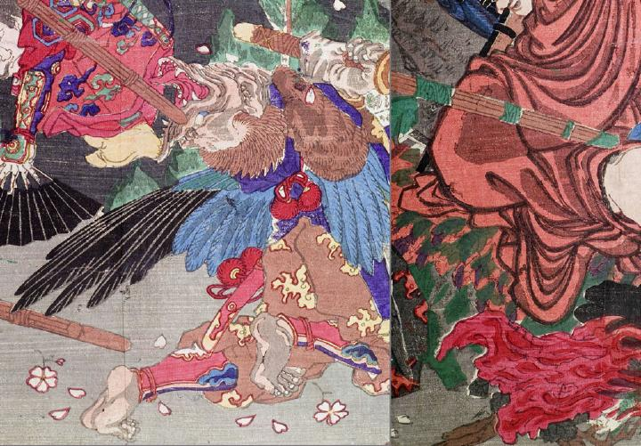

烏天狗。髪は茶色い。口は嘴のようになっており、大きく開いて、鋭い歯を覗かせている。藍色の上着、茶色の袴を身に着け、赤い結袈裟を掛けている。右肩に毛皮を掛けている。背から青色と黒色の翼を生やしている。両手で竹刀を握り、膝を突いて、上体をそらせ、苦しんでいる。
著作者：猩々周麿（河鍋暁斎）／出典：親書誌：U426_nichibunken_0130：僧正坊と牛若丸；ソウショウボウトウシワカマル／日付：2009／資源識別子：U426_nichibunken_0130_0001_0006
Copyright (c)2010- International Research Center for Japanese Studies, Kyoto, Japan. All rights reserved.